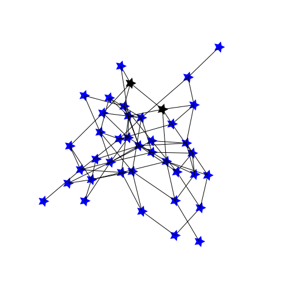

Examples
Some examples of what JGraphs together with Javis might help you animate!

using LightGraphs, NetworkLayout, JGraphs, Javis
startinglayout = Spring(dim=2)
startingscaling = 50
layout2 = Shell()
scaling2 = 100
layout3 = SquareGrid()
scaling3 = 20
n_frames = 500
mst_frames = 1:400
myg = Video(500, 500)
Background(1:n_frames, ground("white", "black"))
g2 = erdos_renyi(40, 0.1)
gd2 = JGraphData(g2,
startinglayout,
scaling=startingscaling,
frames=mst_frames,
edge_width=1
)
myJGraph = JGraph(gd2)
jgraph_morph(myJGraph, layout2, scaling2, frames=51:150)
jgraph_morph(myJGraph, layout3, scaling3, frames=201:300)
jgraph_morph(myJGraph, startinglayout, startingscaling, frames=351:451)
render(myg, pathname="../JGraphs/docs/src/assets/example1.gif")